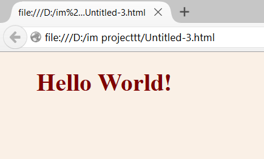

Internal CSS
An internal style sheet may be used if one single page has a unique style.
Internal styles are defined within the <style> element, inside the <head> section of an HTML page.
<head>
<style>
body {
background-color: linen;
}
h1 {
color: maroon;
margin-left: 40px;
}
</style>
</head>
<body>
<h1> Hello World! </p>
</body>
Its output would be as shown:

Designed by Kashish Gupta, Hargun Singh, Karan Verma.